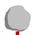
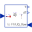
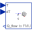

HeatCapacitorLumped thermal element storing heat |

|
Information
This information is part of the Modelica Standard Library maintained by the Modelica Association.
This is a generic model for the heat capacity of a material. No specific geometry is assumed beyond a total volume with uniform temperature for the entire volume. Furthermore, it is assumed that the heat capacity is constant (independent of temperature).
The temperature T [Kelvin] of this component is a state. A default of T = 25 degree Celsius (= SIunits.Conversions.from_degC(25)) is used as start value for initialization. This usually means that at start of integration the temperature of this component is 25 degrees Celsius. You may, of course, define a different temperature as start value for initialization. Alternatively, it is possible to set parameter steadyStateStart to true. In this case the additional equation 'der(T) = 0' is used during initialization, i.e., the temperature T is computed in such a way that the component starts in steady state. This is useful in cases, where one would like to start simulation in a suitable operating point without being forced to integrate for a long time to arrive at this point.
Note, that parameter steadyStateStart is not available in the parameter menu of the simulation window, because its value is utilized during translation to generate quite different equations depending on its setting. Therefore, the value of this parameter can only be changed before translating the model.
This component may be used for complicated geometries where the heat capacity C is determined my measurements. If the component consists mainly of one type of material, the mass m of the component may be measured or calculated and multiplied with the specific heat capacity cp of the component material to compute C:
C = cp*m.
Typical values for cp at 20 degC in J/(kg.K):
aluminium 896
concrete 840
copper 383
iron 452
silver 235
steel 420 ... 500 (V2A)
wood 2500
Parameters (1)
| C |
Value: Type: HeatCapacity (J/K) Description: Heat capacity of element (= cp*m) |
|---|
Connectors (1)
| port |
Type: HeatPort_a |
|---|
Used in Examples (19)
|
Modelica.Electrical.Analog.Examples Heating MOS Inverter |
|
|
Modelica.Electrical.Analog.Examples Heating NPN Or Gate |
|
|
Modelica.Electrical.Analog.Examples Heating PNP NOR Gate |
|
|
Modelica.Electrical.Analog.Examples Heating rectifier |
|
|
Modelica.Electrical.Machines.Examples.DCMachines Test example: Cooling of a DCPM motor |
|
|
Modelica.Mechanics.Rotational.Examples Demonstrate the usage of the rotational eddy current brake |
|
|
Modelica.Mechanics.Translational.Examples Demonstrate the usage of the translational eddy current brake |
|
|
Modelica.Thermal.FluidHeatFlow.Examples Simple cooling circuit |
|
|
Modelica.Thermal.FluidHeatFlow.Examples Cooling circuit with parallel branches |
|
|
Modelica.Thermal.FluidHeatFlow.Examples Indirect cooling circuit |
|
|
Modelica.Thermal.FluidHeatFlow.Examples Cooling circuit with pump and valve |
|
|
Modelica.Thermal.FluidHeatFlow.Examples Cooling circuit with drop out of pump |
|
|
Modelica.Thermal.FluidHeatFlow.Examples Cooling circuit with parallel branches and drop out of pump |
|
|
Modelica.Thermal.FluidHeatFlow.Examples Cooling of one hot mass |
|
|
Modelica.Thermal.FluidHeatFlow.Examples Cooling of two hot masses |
|
|
Modelica.Thermal.HeatTransfer.Examples Simple conduction demo |
|
|
Modelica.Thermal.HeatTransfer.Examples Control temperature of a resistor |
|
|
Modelica.Thermal.HeatTransfer.Examples Second order thermal model of a motor |
|
|
Modelica.Thermal.HeatTransfer.Examples Example to demonstrate variants to generate FMUs (Functional Mock-up Units) |
Used in Components (2)
|  |
Modelica.Thermal.HeatTransfer.Examples.Utilities Input/output block of a direct heatCapacity model |
|  |
Modelica.Thermal.HeatTransfer.Examples.Utilities Input/output block of an inverse heatCapacity model |